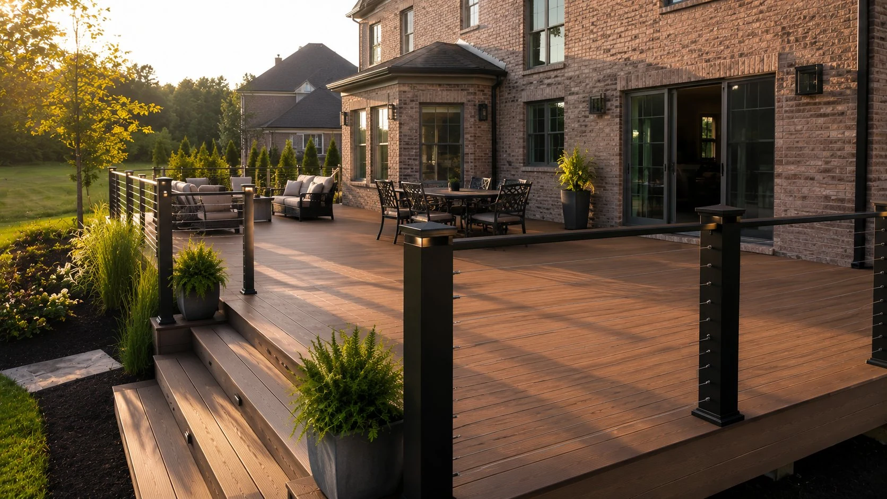
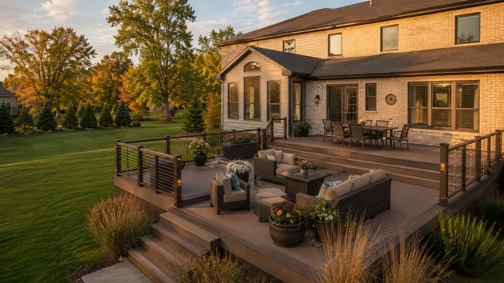
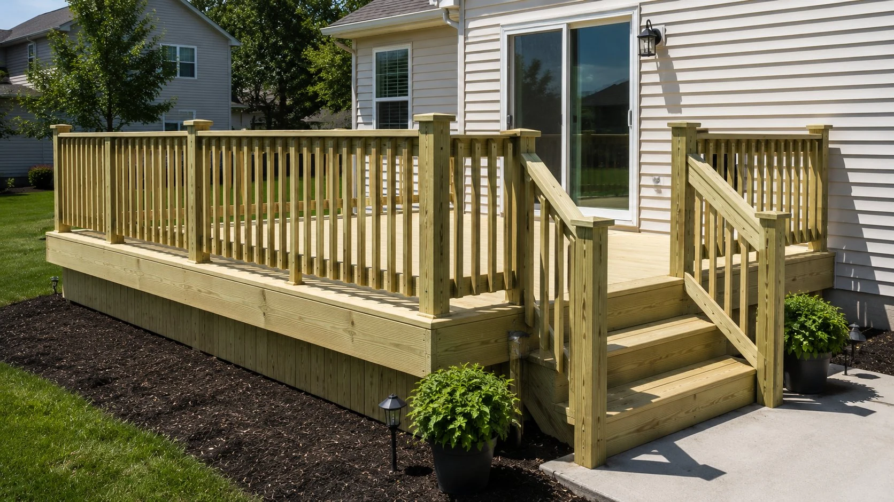
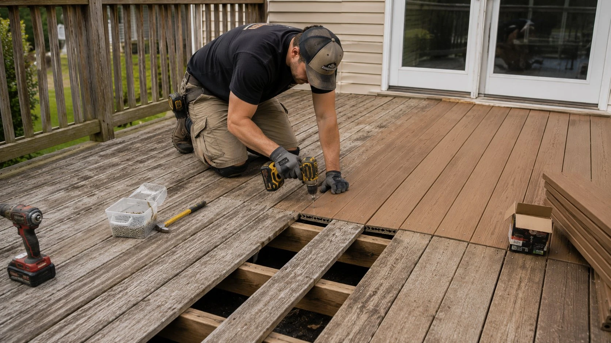

Composite Decks
Trex, TimberTech, Fiberon — 25–30 year warranties, zero maintenance, and engineered for Ohio's freeze-thaw cycles.
Learn More →Newark is our home base. We build decks throughout the city — from older neighborhoods like Mound Builders and North End to newer subdivisions near Route 16.
Free Estimate — No Obligation
(740) 527-8884Mon–Fri 7am–6pm | Sat 8am–2pm
Get Free EstimateNewark, Ohio is Licking County's county seat and our primary service area. We've built decks throughout the city — across established neighborhoods and newer developments alike. Whatever the character of your neighborhood, we build decks that fit the property and hold up to Ohio's climate.
Newark homeowners ask us about composite vs. wood more than anything else. A significant weather event on June 29, 2012 — a derecho that hit central Ohio hard — took out a lot of older deck structures in Newark and gave many homeowners a firsthand look at how poorly built decks hold up under stress. Our honest answer: if you plan to be in your home for 10+ years, composite is almost always worth the extra upfront cost when you factor in maintenance. If you're planning to sell, we'll give you a real conversation about what adds value vs. what's overkill for your market.
Newark has a wide range of housing stock — older homes in the historic districts, ranch homes from the 60s and 70s, newer builds near the edges of town. Each one has different needs. The older homes sometimes have tricky ledger situations or older footings that need to be addressed. We assess everything honestly before we quote.


Trex, TimberTech, Fiberon — 25–30 year warranties, zero maintenance, and engineered for Ohio's freeze-thaw cycles.
Learn More →
Pressure-treated Southern Yellow Pine built to code, with proper frost-depth footings and hardware rated for ground contact.
Learn More →
Board replacement, joist repair, full teardown and rebuild — we assess honestly and fix what actually needs fixing.
Learn More →What we hear most often from homeowners in Newark and the surrounding area.
(740) 527-8884 Mon–Fri 7am–6pm | Sat 8am–2pmWe come to your property, measure the space, discuss your material options, and provide a written estimate — no pressure, no obligation. We respond within one business day.
We respond within one business day.
Free estimate, no obligation. Serving all of Licking County, Ohio.